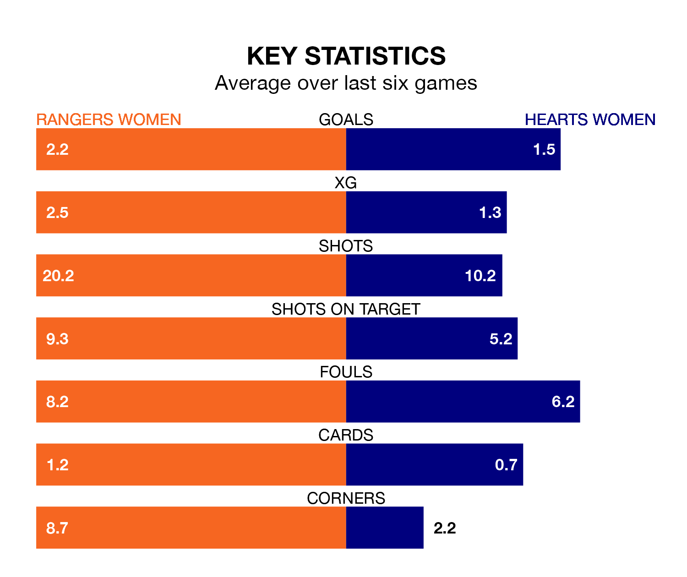

Rangers Women host Hearts Women in Wednesday's late match at the Broadwood Stadium looking to bounce back from defeat last time out in SWPL 1.
Rangers, who sit second in the league after 27 games, fell to a 1-3 away defeat to Partick Thistle Women on April 21.
They face a Hearts side who also lost their last match, a 5-0 defeat to Celtic Women, and who sit fourth in the table.
With 102 goals in 27 games so far this season, Rangers are the league's second-highest scorers with 3.8 goals per game. And they are conceding fewer than average, letting in 16 goals at a rate of 0.6 per game.
Hearts are also above average scorers, with 2.4 goals per game, compared to a league average of 2.1. They have conceded 1.1 goals per game.
With Jenna Fife between the sticks, the home side can rely on one of the league's safest pair of hands. She has kept 10 clean sheets in her 22 appearances this season, and only one other 'keeper – Celtic Women's Kelsey Daugherty – has been able to prevent the opposition scoring on more occasions in SWPL 1.
In the visitors' net, Charlotte Parker-Smith has eight clean sheets in 22 games. She has conceded a goal every 76 minutes, twice as often as the 152 minutes between goals for Fife.
In the last 10 years, Rangers and Hearts have played each other on 14 occasions. Rangers won 11 of them, Hearts one, and they drew twice.
On average, Rangers scored 3.2 goals and Hearts 0.4 in those matches.
Their last meeting was on April 17, when Hearts won 1-0 at home.
Rangers are in reasonable form in SWPL 1, with four wins and two losses from their last six games.
And also with four wins and two losses over that period, Hearts's form is identical – they have both taken 12 points from 18.
Updated: 07:59 (UTC), 26/04/24